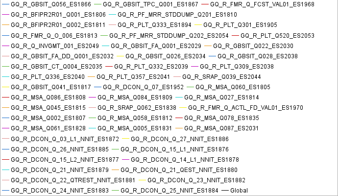

Populations
Graphs

Statistics
| Population | Total requests | Average requests/s | Avg. Page res. time | Error rate |
|---|---|---|---|---|
| GQ_R_PLT_Q350_ES1901 | 45 (0.072%) | 0.0 | 0s (-100%) | 0% (-100%) |
| GQ_R_PLT_Q369_ES1911 | 1810 (2.9%) | 0.4 | 0.66s (-75.57%) | 0% (-100%) |
| GQ_R_PLT_Q359_ES1931 | 1810 (2.9%) | 0.4 | 0.7s (-74.09%) | 0% (-100%) |
| GQ_R_PLT_Q368_ES1937 | 1865 (2.99%) | 0.4 | 0.657s (-75.68%) | 0% (-100%) |
| GQ_R_PLT_Q304_ES1943 | 890 (1.43%) | 0.2 | 0.466s (-82.75%) | 0% (-100%) |
| GQ_R_PLT_Q323_ES1926 | 875 (1.4%) | 0.2 | 0.49s (-81.87%) | 0% (-100%) |
| GQ_R_PLT_Q316_ES1921 | 895 (1.43%) | 0.2 | 0.758s (-71.95%) | 0% (-100%) |
| GQ_R_PLT_Q310_ES1916 | 630 (1.01%) | 0.1 | 0.936s (-65.36%) | 0% (-100%) |
| GQ_R_PLT_Q303_ES1922 | 1065 (1.71%) | 0.2 | 0.594s (-78.02%) | 0% (-100%) |
| GQ_R_PLT_Q521_ES1905 | 485 (0.777%) | 0.1 | 0.493s (-81.75%) | 0% (-100%) |
| GQ_R_PLT_Q312_ES1918 | 1325 (2.12%) | 0.3 | 0.412s (-84.75%) | 0% (-100%) |
| GQ_R_PLT_Q362_ES1932 | 1025 (1.64%) | 0.2 | 1.12s (-58.36%) | 0% (-100%) |
| GQ_R_PLT_Q318_ES1896 | 770 (1.23%) | 0.2 | 0.903s (-66.58%) | 0% (-100%) |
| GQ_R_PLT_Q307_ES1891 | 365 (0.585%) | 0.1 | 0.83s (-69.28%) | 0% (-100%) |
| GQ_R_PLT_Q306_ES1899 | 475 (0.761%) | 0.1 | 0.785s (-70.95%) | 0% (-100%) |
| GQ_GFILPLT14_Q014_ES1897 | 350 (0.561%) | 0.1 | 0.634s (-76.54%) | 0% (-100%) |
| GQ_GFILPLT10_Q000_ES1945 | 340 (0.545%) | 0.1 | 0.859s (-68.21%) | 0% (-100%) |
| GQ_R_PLT_Q386_ES1906 | 510 (0.817%) | 0.1 | 1.02s (-62.25%) | 0% (-100%) |
| GQ_R_PLT_Q354_ES1909 | 375 (0.601%) | 0.1 | 0.663s (-75.46%) | 0% (-100%) |
| GQ_R_PLT_Q313_ES1920 | 370 (0.593%) | 0.1 | 0.793s (-70.65%) | 0% (-100%) |
| GQ_R_PLT_Q302_ES1928 | 350 (0.561%) | 0.1 | 0.659s (-75.61%) | 0% (-100%) |
| GQ_R_SRAP_Q010_ES1844 | 350 (0.561%) | 0.1 | 4.97s (+83.8%) | 0% (-100%) |
| GQ_R_SRAP_QP001_ES1846 | 340 (0.545%) | 0.1 | 4.24s (+56.9%) | 0% (-100%) |
| GQ_R_SRAP_Q012_OPT_ES1853 | 345 (0.553%) | 0.1 | 5.99s (+121.5%) | 0% (-100%) |
| GQ_R_SRAP_AC_Q049_OPT_ES1852 | 1600 (2.56%) | 0.3 | 4.02s (+48.9%) | 0% (-100%) |
| GQ_R_DCON_Q_12_ES1948 | 52 (0.083%) | 0.0 | 0s (-100%) | 1.9% (+4,515%) |
| GQ_R_DCON_Q_15_ES1951 | 52 (0.083%) | 0.0 | 0s (-100%) | 1.9% (+4,515%) |
| GQ_R_DCON_Q_04_ES1946 | 55 (0.088%) | 0.0 | 0s (-100%) | 0% (-100%) |
| GQ_R_DCON_Q_03_ES1953 | 45 (0.072%) | 0.0 | 0s (-100%) | 0% (-100%) |
| GQ_R_DCON_Q_02_ES1949 | 52 (0.083%) | 0.0 | 0s (-100%) | 1.9% (+4,515%) |
| GQ_PF_VALIDATION_ES1978 | 50 (0.08%) | 0.0 | 0s (-100%) | 0% (-100%) |
| GQ_R_PF_FSF_Q003_ES1993 | 40 (0.064%) | 0.0 | 0s (-100%) | 0% (-100%) |
| GQ_R_PF_MRR_OTI_Q001_ES1998 | 45 (0.072%) | 0.0 | 0s (-100%) | 0% (-100%) |
| GQ_R_PF_MSA_CO_Q004_ES1825 | 45 (0.072%) | 0.0 | 0s (-100%) | 0% (-100%) |
| GQ_R_PF_MSA_CO_Q005_ES1823 | 45 (0.072%) | 0.0 | 0s (-100%) | 0% (-100%) |
| GQ_R_PF_MSA_CO_Q002_ES1821 | 45 (0.072%) | 0.0 | 0s (-100%) | 0% (-100%) |
| GQ_R_PF_FX_RATE_Q001_ES1979 | 45 (0.072%) | 0.0 | 0s (-100%) | 0% (-100%) |
| GQ_R_PF_GLOBOQR_Q002_ES2008 | 50 (0.08%) | 0.0 | 0s (-100%) | 0% (-100%) |
| GQ_R_PF_AD_Q001_2_ES2011 | 45 (0.072%) | 0.0 | 0s (-100%) | 0% (-100%) |
| GQ_R_PF_FLEXVAL_Q001_ES2010 | 45 (0.072%) | 0.0 | 0s (-100%) | 0% (-100%) |
| GQ_R_PF_FSF_Q004_ES2005 | 24 (0.038%) | 0.0 | 0s (-100%) | 20.8% (+49,895%) |
| GQ_R_PF_FX_Q003_4_ES1985 | 45 (0.072%) | 0.0 | 0s (-100%) | 0% (-100%) |
| GQ_R_PF_FX_Q004_5_ES1984 | 45 (0.072%) | 0.0 | 0s (-100%) | 0% (-100%) |
| GQ_R_PF_ADHOC_Q023_ES1988 | 45 (0.072%) | 0.0 | 0s (-100%) | 0% (-100%) |
| GQ_R_PF_ADHOC_Q024_ES1976 | 45 (0.072%) | 0.0 | 0s (-100%) | 0% (-100%) |
| GQ_R_PF_ADHOC_Q022_ES1983 | 45 (0.072%) | 0.0 | 0s (-100%) | 0% (-100%) |
| GQ_R_PF_ADHOC_Q002_ES1975 | 45 (0.072%) | 0.0 | 0s (-100%) | 0% (-100%) |
| GQ_R_PF_ADHOC_Q001_ES1973 | 45 (0.072%) | 0.0 | 0s (-100%) | 0% (-100%) |
| GQ_R_DMR_Q_08_ES1954 | 40 (0.064%) | 0.0 | 0s (-100%) | 0% (-100%) |
| GQ_R_FMR_Q_C_GLB_TMP_TS_ES1960 | 45 (0.072%) | 0.0 | 0s (-100%) | 0% (-100%) |
| GQ_R_FMR_Q_ACTL_VAL01_ES1959 | 40 (0.064%) | 0.0 | 0s (-100%) | 0% (-100%) |
| GQ_R_FMR_Q_FCST_FDC_VAL01_ES1969 | 40 (0.064%) | 0.0 | 0s (-100%) | 0% (-100%) |
| GQ_R_FMR_GR_Q323_ES1962 | 45 (0.072%) | 0.0 | 0s (-100%) | 0% (-100%) |
| GQ_R_FMR_Q_GLB_TMP_RU_RS_AS_ES1966 | 45 (0.072%) | 0.0 | 0s (-100%) | 0% (-100%) |
| GQ_R_FMR_GR_Q300_ES1965 | 45 (0.072%) | 0.0 | 0s (-100%) | 0% (-100%) |
| GQ_R_FMR_GR_Q316_ES1972 | 45 (0.072%) | 0.0 | 0s (-100%) | 0% (-100%) |
| GQ_R_FMR_Q_GMT_008_ES1963 | 45 (0.072%) | 0.0 | 0s (-100%) | 0% (-100%) |
| GQ_R_FMR_Q_GMT_007_ES1961 | 45 (0.072%) | 0.0 | 0s (-100%) | 0% (-100%) |
| GQ_R_FMR_Q_O_005_ES1967 | 50 (0.08%) | 0.0 | 0s (-100%) | 0% (-100%) |
| GQ_R_FMR_Q_GMT_RU_003_ES1971 | 45 (0.072%) | 0.0 | 0s (-100%) | 0% (-100%) |
| GQ_R_PF_MR_ADHOC_Q009_ES1974 | 45 (0.072%) | 0.0 | 0s (-100%) | 0% (-100%) |
| GQ_R_DCON_Q_05_ES1947 | 45 (0.072%) | 0.0 | 0s (-100%) | 0% (-100%) |
| GQ_R_SRAP_Q021_LE_ES1858 | 40 (0.064%) | 0.0 | 0s (-100%) | 0% (-100%) |
| GQ_R_SRAP_Q040_ES1857 | 40 (0.064%) | 0.0 | 0s (-100%) | 0% (-100%) |
| GQ_R_SRAP_Q013_OPT_ES1856 | 340 (0.545%) | 0.1 | 8s (+196.2%) | 0% (-100%) |
| GQ_R_SRAP_Q034_ES1855 | 45 (0.072%) | 0.0 | 0s (-100%) | 0% (-100%) |
| GQ_R_SRAP_Q021_OPT_ES1843 | 40 (0.064%) | 0.0 | 0s (-100%) | 0% (-100%) |
| GQ_R_SRAP_Q051_OPT_ES1847 | 330 (0.529%) | 0.1 | 7.11s (+163%) | 0% (-100%) |
| GQ_R_SRAP_Q016_OPT_V2_ES1836 | 1365 (2.19%) | 0.3 | 8.27s (+206.2%) | 0% (-100%) |
| GQ_R_SRAP_Q007_OPT_V2_ES1837 | 1990 (3.19%) | 0.4 | 3.64s (+34.7%) | 0% (-100%) |
| GQ_R_FMR_Q_GLB_TMP_RS_AS_ES1977 | 45 (0.072%) | 0.0 | 0s (-100%) | 0% (-100%) |
| GQ_R_GBSIT_Q023_ES1868 | 1405 (2.25%) | 0.3 | 3.33s (+23.4%) | 0% (-100%) |
| GQ_R_GBSIT_BR_Q001 & GQ_R_GBSIT_Q027_BR_1_ES1862 | 900 (1.44%) | 0.2 | 3.83s (+41.9%) | 0% (-100%) |
| GQ_R_GBSIT_ORG_SUMMARY_Q001_ES1871 | 340 (0.545%) | 0.1 | 7.04s (+160.4%) | 0% (-100%) |
| GQ_R_PLT_Q320_ES1912 | 1185 (1.9%) | 0.3 | 0.738s (-72.69%) | 0% (-100%) |
| GQ_R_GBSIT_BR_Q002 & GQ_R_GBSIT_Q027_GS_1_ES1870 | 830 (1.33%) | 0.2 | 2.27s (-15.88%) | 0% (-100%) |
| GQ_R_PLT_Q366_ES1903 | 1045 (1.67%) | 0.2 | 1.55s (-42.64%) | 0% (-100%) |
| GQ_R_GBSIT_Q022_ES1863 | 300 (0.481%) | 0.1 | 1.48s (-45.3%) | 0% (-100%) |
| GQ_R_GBSIT_Q040_ES1864 | 310 (0.497%) | 0.1 | 1.42s (-47.45%) | 0% (-100%) |
| GQ_R_GBSIT_Q044_ES1865 | 340 (0.545%) | 0.1 | 0.938s (-65.28%) | 0% (-100%) |
| GQ_R_GBSIT_Q056_ES1866 | 325 (0.521%) | 0.1 | 5.12s (+89.6%) | 0% (-100%) |
| GQ_R_GBSIT_TPC_Q001_ES1867 | 355 (0.569%) | 0.1 | 1.47s (-45.67%) | 0% (-100%) |
| GQ_R_FMR_Q_FCST_VAL01_ES1968 | 40 (0.064%) | 0.0 | 0s (-100%) | 0% (-100%) |
| GQ_R_BFIPR2R01_Q001_ES1806 | 45 (0.072%) | 0.0 | 0s (-100%) | 0% (-100%) |
| GQ_R_PF_MRR_STDDUMP_Q201_ES1810 | 85 (0.136%) | 0.0 | 0s (-100%) | 0% (-100%) |
| GQ_R_BFIPR2R01_Q002_ES1811 | 45 (0.072%) | 0.0 | 0s (-100%) | 0% (-100%) |
| GQ_R_PLT_Q333_ES1894 | 760 (1.22%) | 0.2 | 0.542s (-79.94%) | 0% (-100%) |
| GQ_R_PLT_Q301_ES1905 | 1160 (1.86%) | 0.2 | 0.544s (-79.87%) | 0% (-100%) |
| GQ_R_FMR_Q_O_006_ES1813 | 95 (0.152%) | 0.0 | 0s (-100%) | 0% (-100%) |
| GQ_R_PF_MRR_STDDUMP_Q202_ES2054 | 85 (0.136%) | 0.0 | 0s (-100%) | 0% (-100%) |
| GQ_R_PLT_Q520_ES2053 | 990 (1.59%) | 0.2 | 0.556s (-79.42%) | 0% (-100%) |
| GQ_R_Q_INVGMT_001_ES2049 | 45 (0.072%) | 0.0 | 0s (-100%) | 0% (-100%) |
| GQ_R_GBSIT_FA_Q001_ES2029 | 1400 (2.24%) | 0.3 | 1.49s (-44.89%) | 0% (-100%) |
| GQ_R_GBSIT_Q022_ES2030 | 1180 (1.89%) | 0.3 | 0.928s (-65.66%) | 0.4% (+916.9%) |
| GQ_R_GBSIT_FA_DD_Q001_ES2032 | 1405 (2.25%) | 0.3 | 0.887s (-67.17%) | 0% (-100%) |
| GQ_R_GBSIT_Q026_ES2034 | 1400 (2.24%) | 0.3 | 2.13s (-21.02%) | 0% (-100%) |
| GQ_R_GBSIT_Q028_ES2038 | 55 (0.088%) | 0.0 | 0s (-100%) | 0% (-100%) |
| GQ_R_GBSIT_CT_Q004_ES2035 | 55 (0.088%) | 0.0 | 0s (-100%) | 0% (-100%) |
| GQ_R_PLT_Q332_ES2039 | 600 (0.962%) | 0.1 | 0.759s (-71.91%) | 0% (-100%) |
| GQ_R_PLT_Q309_ES2038 | 1320 (2.12%) | 0.3 | 0.534s (-80.24%) | 0% (-100%) |
| GQ_R_PLT_Q336_ES2040 | 1310 (2.1%) | 0.3 | 0.614s (-77.28%) | 0% (-100%) |
| GQ_R_PLT_Q357_ES2041 | 285 (0.457%) | 0.1 | 1.54s (-43.12%) | 0% (-100%) |
| GQ_R_SRAP_Q039_ES2044 | 300 (0.481%) | 0.1 | 2.84s (+5.22%) | 0% (-100%) |
| GQ_R_GBSIT_Q041_ES1817 | 45 (0.072%) | 0.0 | 0s (-100%) | 0% (-100%) |
| GQ_R_DCON_Q_07_ES1952 | 75 (0.12%) | 0.0 | 0s (-100%) | 0% (-100%) |
| GQ_R_MSA_Q060_ES1805 | 1660 (2.66%) | 0.4 | 3.49s (+29.2%) | 0% (-100%) |
| GQ_R_MSA_Q086_ES1808 | 800 (1.28%) | 0.2 | 4.89s (+80.9%) | 0% (-100%) |
| GQ_R_MSA_Q084_ES1809 | 1020 (1.63%) | 0.2 | 3.11s (+15%) | 0% (-100%) |
| GQ_R_MSA_Q027_ES1814 | 1610 (2.58%) | 0.3 | 2.37s (-12.29%) | 0% (-100%) |
| GQ_R_MSA_Q045_ES1815 | 1850 (2.97%) | 0.4 | 4.08s (+51.1%) | 0% (-100%) |
| GQ_R_SRAP_Q062_ES1838 | 1005 (1.61%) | 0.2 | 0.506s (-81.27%) | 0.5% (+1,094%) |
| GQ_R_FMR_Q_ACTL_FD_VAL01_ES1970 | 40 (0.064%) | 0.0 | 0s (-100%) | 0% (-100%) |
| GQ_R_MSA_Q002_ES1807 | 2270 (3.64%) | 0.5 | 2.91s (+7.81%) | 0% (-100%) |
| GQ_R_MSA_Q058_ES1812 | 1125 (1.8%) | 0.2 | 2.34s (-13.47%) | 0% (-100%) |
| GQ_R_MSA_Q078_ES1835 | 1645 (2.64%) | 0.4 | 3.17s (+17.2%) | 0% (-100%) |
| GQ_R_MSA_Q061_ES1828 | 1585 (2.54%) | 0.3 | 30s (+1,011%) | 0% (-100%) |
| GQ_R_MSA_Q005_ES1831 | 980 (1.57%) | 0.2 | 3.06s (+13.4%) | 0% (-100%) |
| GQ_R_MSA_Q087_ES2031 | 960 (1.54%) | 0.2 | 13.8s (+410.7%) | 0% (-100%) |
| GQ_R_DCON_Q_03_L1_NNIT_ES1872 | 40 (0.064%) | 0.0 | 0s (-100%) | 0% (-100%) |
| GQ_R_DCON_Q_27_NNIT_ES1886 | 45 (0.072%) | 0.0 | 0s (-100%) | 0% (-100%) |
| GQ_R_DCON_Q_26_NNIT_ES1885 | 55 (0.088%) | 0.0 | 0s (-100%) | 0% (-100%) |
| GQ_R_DCON_Q_15_L1_NNIT_ES1876 | 42 (0.067%) | 0.0 | 0s (-100%) | 9.5% (+22,755%) |
| GQ_R_DCON_Q_15_L2_NNIT_ES1877 | 20 (0.032%) | 0.0 | 0s (-100%) | 0% (-100%) |
| GQ_R_DCON_Q_14_L1_NNIT_ES1878 | 45 (0.072%) | 0.0 | 0s (-100%) | 0% (-100%) |
| GQ_R_DCON_Q_21_NNIT_ES1879 | 55 (0.088%) | 0.0 | 0s (-100%) | 0% (-100%) |
| GQ_R_DCON_Q_21_QEST_NNIT_ES1880 | 55 (0.088%) | 0.0 | 0s (-100%) | 0% (-100%) |
| GQ_R_DCON_Q_22_QTREST_NNIT_ES1881 | 42 (0.067%) | 0.0 | 0s (-100%) | 9.5% (+22,755%) |
| GQ_R_DCON_Q_23_NNIT_ES1882 | 55 (0.088%) | 0.0 | 0s (-100%) | 0% (-100%) |
| GQ_R_DCON_Q_24_NNIT_ES1883 | 55 (0.088%) | 0.0 | 0s (-100%) | 0% (-100%) |
| GQ_R_DCON_Q_25_NNIT_ES1884 | 55 (0.088%) | 0.0 | 0s (-100%) | 0% (-100%) |
| Global | 62394 (100%) | 13.4 | 2.7s | 0% |